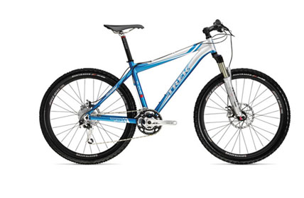
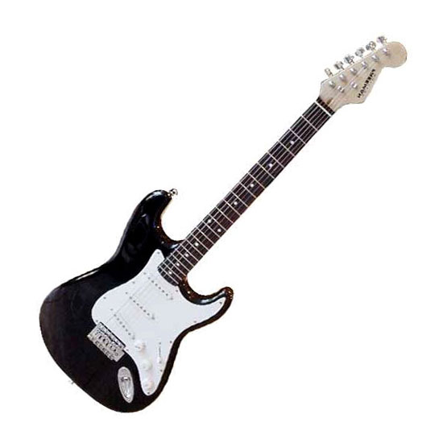

MIS GUSTOS
Bueno, pues soy amante a los deportes, me encanta la bicicleta, y también ir al gimnasio, aunque no asisto muy a menudo, pues voy al de la universidad; pero en realidad no es que quede mucho tiempo.
Y en cuanto a los computadores, no se si es una afición o no, pero me encanta la Internet y los videojuegos, me gusta la programación y me gustaría también estudiar algo de Inteligencia Artificial.
En cuanto a los gustos de la música, pues soy muy variado, pero lo que mas me gusta es el rock, preferiblemente los clásicos y las baladas rockeras. Y ya que mencione al Rock, pues precisamente una de mis agrupaciones favoritas son los Guns n Roses, también me gusta mucho Linkin Park. Bueno pero igual no me considero Rockero, pues no visto como tal, prefiero la ropa clásica y que no sea extravagante.
Me encanta también la guitarra eléctrica, aunque en realidad no tengo una y ni se tocar guitarra, pero es algo que quiero hacer, saber tocarla como Dios manda. Ya di los primeros pasos, pues me conseguí hace poco una guitarra acústica y pretendo tomar clases, también he estado viendo en Internet cursos para aprender a tocar y ya se muchas cosas relacionadas con la guitarra.
Bueno y por ultimo, como podrán ver estoy metido en este curso de el SENA y como dije antes soy amante a la Internet, pues la veo como una herramienta muy buena donde podemos acceder a información de todo tipo; buena, mala, bueno hay para escoger.